Termék információk:
- Fejlesztő: JetBrains
- Kategória: Java IDE
- Honlap: https://www.jetbrains.com/
Integrált fejlesztői környezet
Az IntelliJ IDEA egy Java IDE a JetBrains-től, elérhető Apache 2 Licenccel közösségi
kiadásban
és kereskedelmi kiadásban is. Gyakran egyszerűen csak "IDEA"-ként vagy "IntelliJ"-ként hivatkoznak rá.
Az IntelliJ IDEA első verzióját 2001 januárjában adták ki, és akkoriban egyike volt azoknak az elsőként
elérhető Java IDE-knek, amelyek továbbfejlesztett kód navigációval és kód refaktorálási képességekkel voltak
felvértezve. (forrás: wikipedia)
Először is le kell töltenünk a telepítő fájlt a JET Brains
honlapjáról. Ha ezzel
megvagyunk, akkor jöhet a telepítés.

Következő lépésként felajánlja nekünk az alapértelmezett telepítési útvonalat, amin ha nagyon szeretnénk, persze módosíthatunk is.

Majd a telepítési opciókhoz érünk. Például be kell jelölni, hogy 32, vagy 64 bites legyen.
Ezek után megadhatjuk a Start menüben létrehozandó mappa nevét és már indulhat is a telepítés!


El kell még fogadnunk a felhasználási feltételeket, majd utána akár használatba is vehetjük és elkezdhetjük létrehozni első projektünket!

Rákattintunk a "New Project" lehetőségre...

Bal oldalon alapból a Maven van kijelölve. Next-re kattintunk...
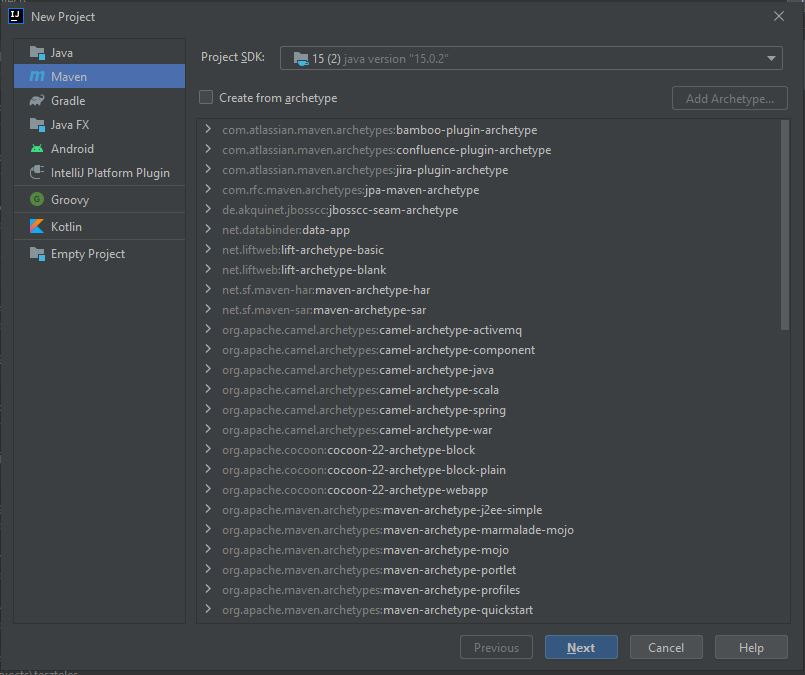
Adunk neki egy nevet, majd a "Finish" jön...
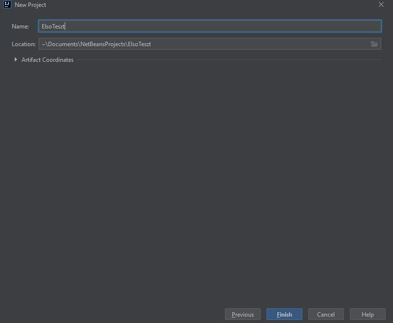
Beugrik egyből a pom.xml, amit ki kell még egészítenünk!
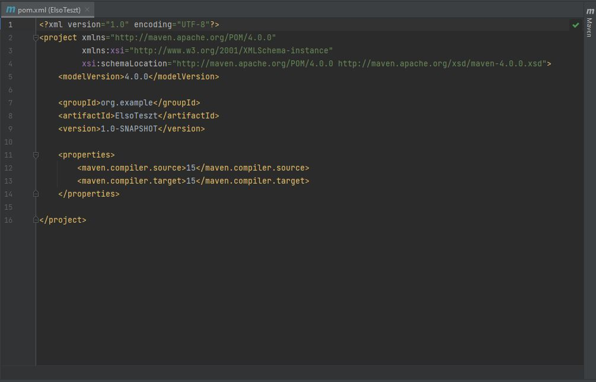
Böngészőben hozzuk be a https://mvnrepository.com/ oldalát. Középen felül a keresőbe írjuk be azt, hogy Jupiter!
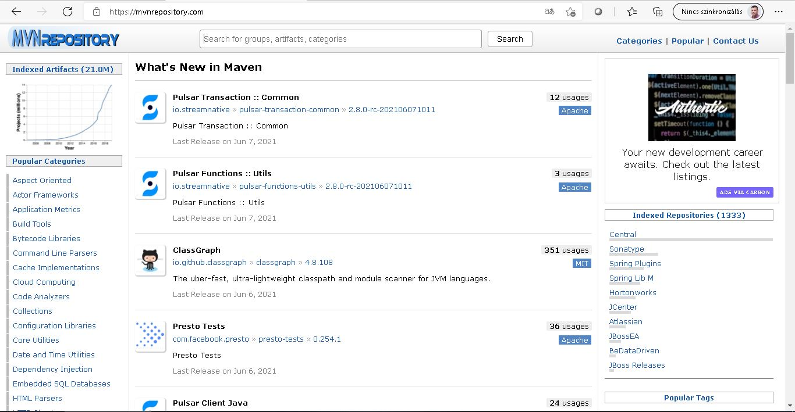
Nekünk innen az API, Engine, és a Params kell, pontosan ebben a sorrendben!
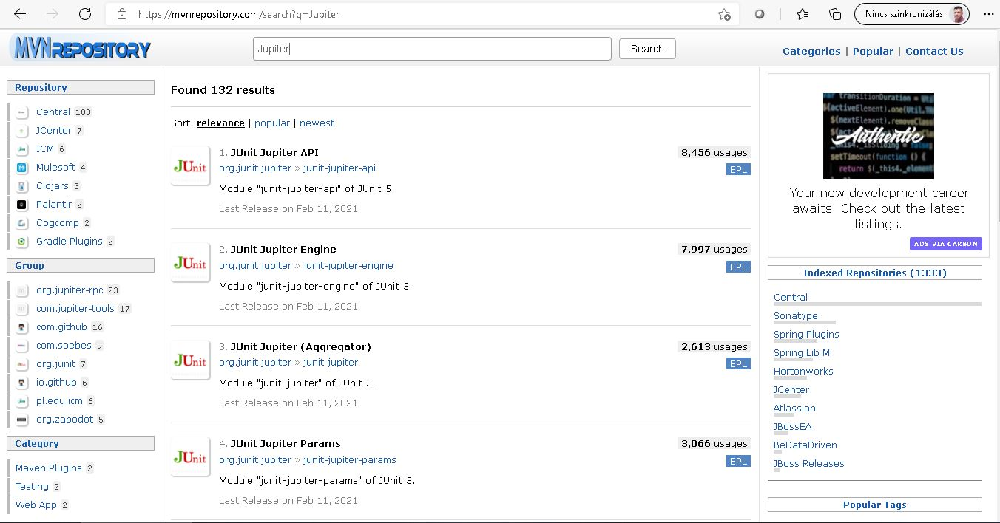
API-ra kattintunk, majd a listából kiválasztunk egyet. Célszerű nem a legfrissebbet választani...
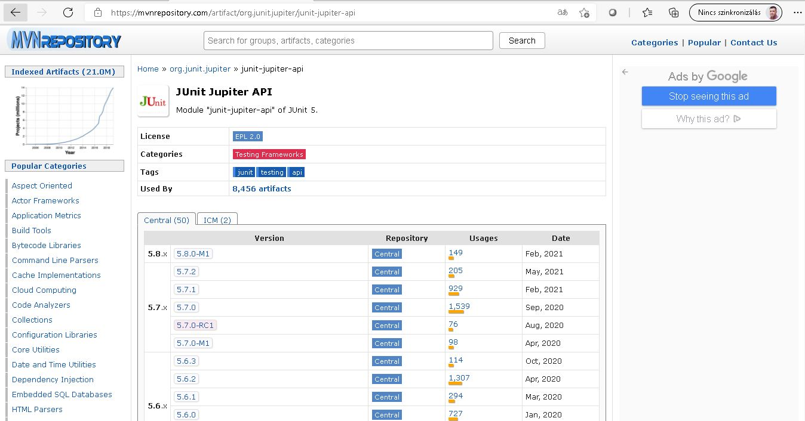
Itt is a Maven az első. Kijelöljük a szövegdoboz tartalmát, majd kimásoljuk. Ezt kell beillesztenünk a pom.xml fájlba, majd ezek után a másik kettőt is!
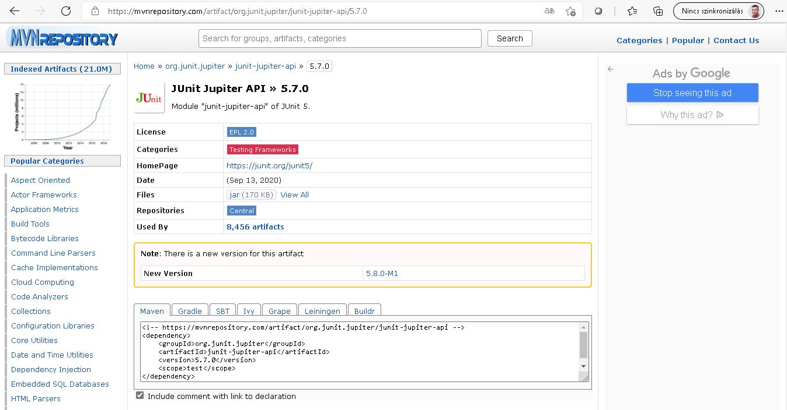

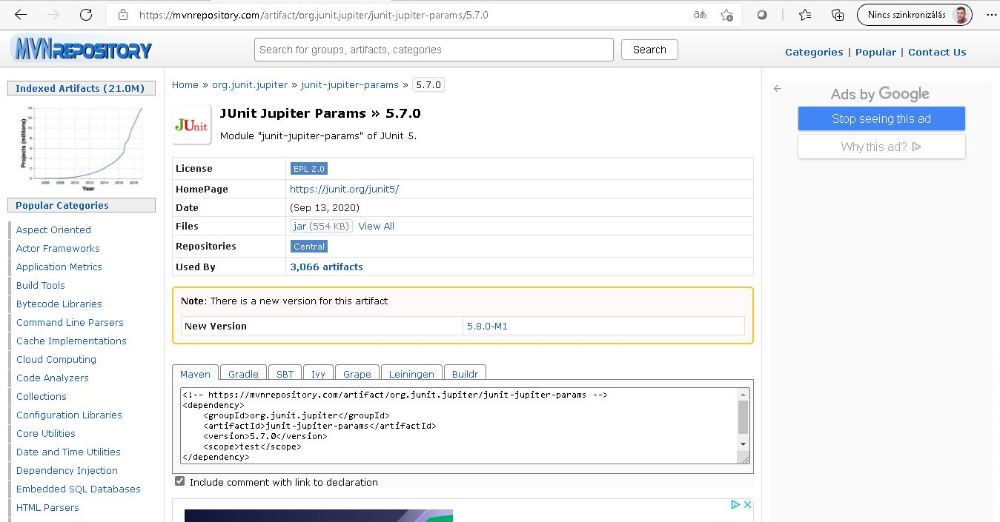
Ha mindent jól csináltunk, akkor valahogy így néz ki... Egy pom.xml file tartalmat ITT is találsz.
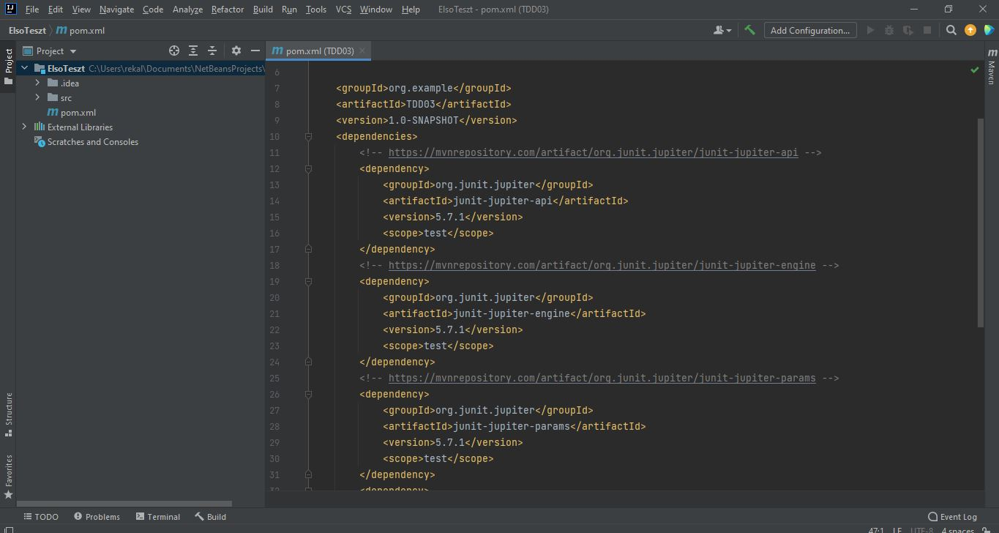
Következhet a Java Class létrehozása. Kattintsunk jobb egérgombbal a test mappára a bal oldalon, majd a "New" és "Java Class"-ra.
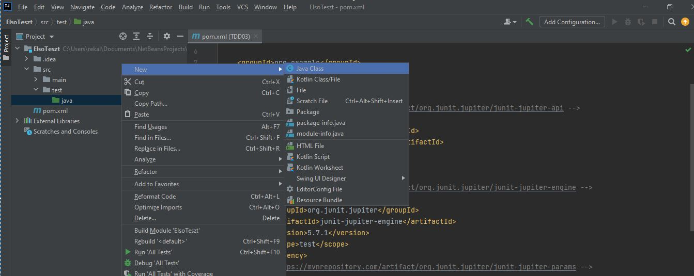
Elnevezzük, majd ENTER leütése után létre is hozza.
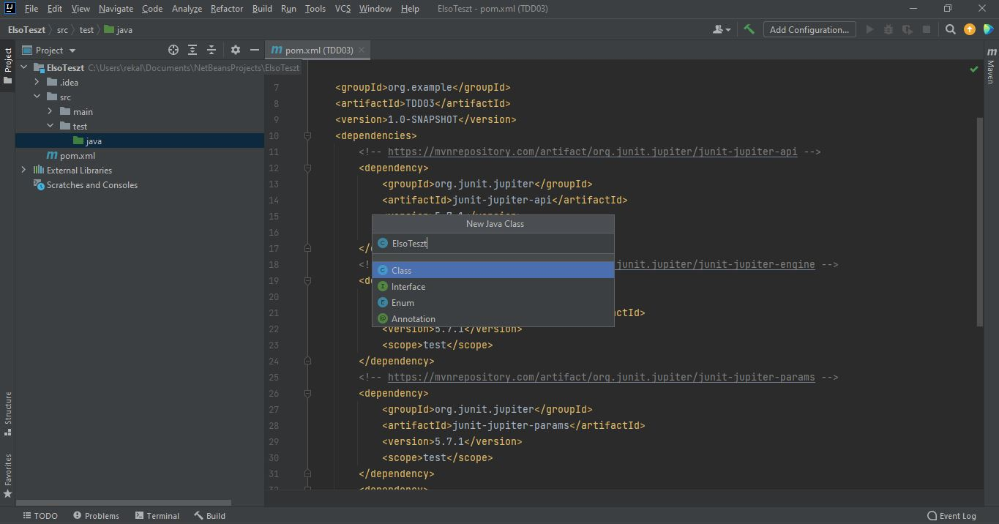
Ezek után kezdhetjük megírni a teszt eseteket, majd a hozzá tartozó metódust.
Ezekről bővebben ITT olvashatsz, illetve találsz példafeladatokat is.
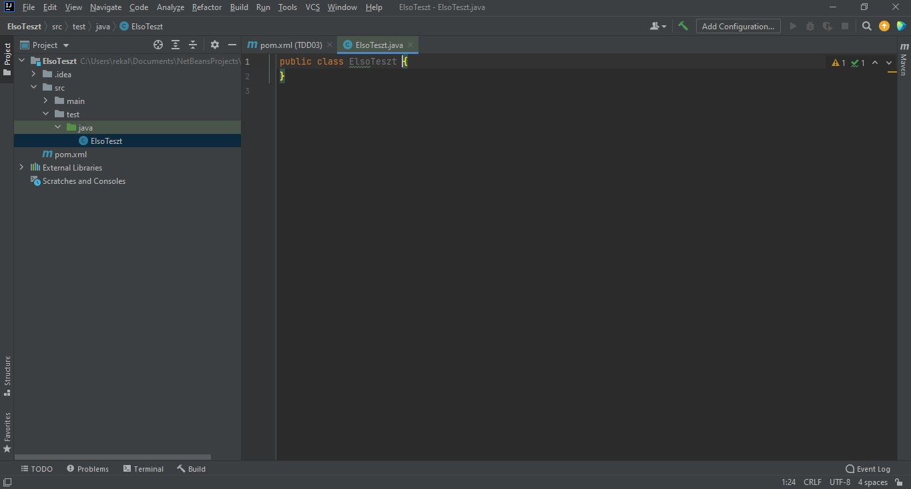